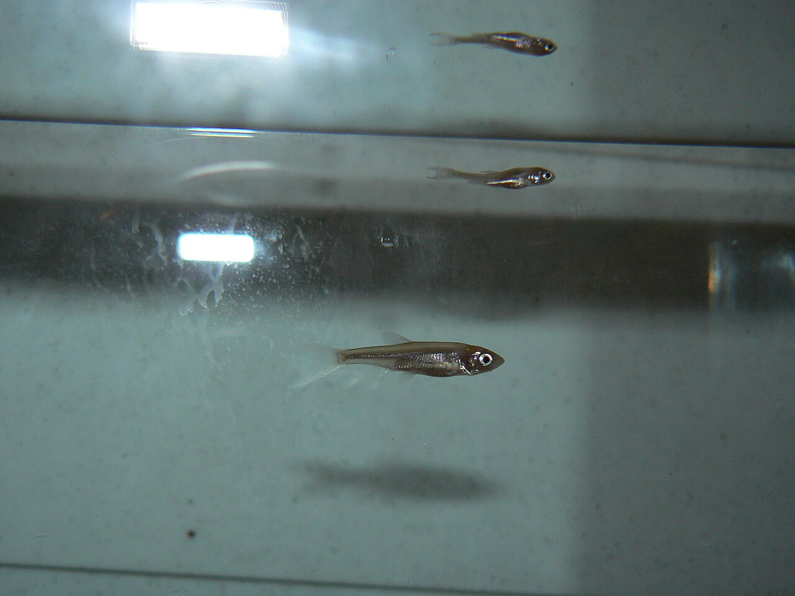

Rozpoznawanie
Najważniejsze cechy
Smukła, wrzecionowata ryba rzeczna, zwykle 15–25 cm, wyjątkowo przekraczająca 30 cm. Ma mały pysk skierowany lekko w dół, srebrzyste boki, ciemny grzbiet i płetwy szarawe lub bladożółtawe. Płetwa odbytowa jest wcięta, o wklęsłej krawędzi — to najpewniejsza cecha rozpoznawcza w terenie.
Jelec, kleń czy jaź
Te trzy gatunki mylą się najczęściej, zwłaszcza u młodych ryb. Rozstrzyga płetwa odbytowa: u klenia jest zaokrąglona i wyraźnie wypukła, u jelca i jazia wcięta. Dalej patrz na pysk i płetwy — kleń ma szeroką, dużą paszczę i czerwonawe płetwy brzuszne, jaź jest wyższy w ciele, z drobnymi łuskami i czerwonawymi płetwami, a jelec pozostaje smukły, z małym dolnym pyskiem i płetwami bez wyraźnej czerwieni. Od uklei odróżnia go pysk: ukleja ma go skierowany ku górze.
Siedlisko i występowanie
Gdzie stoi w rzece
Jelec jest rybą wód płynących: zajmuje rzeki nizinne i podgórskie o czystej, dobrze natlenionej wodzie, od krainy lipienia po krainę leszcza. Trzyma się w ławicach na umiarkowanym nurcie, nad żwirowym i piaszczystym dnem — przy przemiałach, na wyjściach z bystrzy, wzdłuż granicy prądu i wody stojącej. W wodach stojących nie występuje. Jest wrażliwy na zanieczyszczenia i zabudowę poprzeczną rzek, więc jego obecność bywa traktowana jako dobry znak dla stanu cieku.
Biologia i rola w ekosystemie
Pokarm i rozród
Żywi się bezkręgowcami niesionymi przez prąd, larwami owadów, skorupiakami i owadami zbieranymi z powierzchni; latem chętnie wybiera pokarm z lustra wody. Tarło odbywa wczesną wiosną, orientacyjnie w marcu i kwietniu, na żwirowym dnie w bystrej wodzie — ryby zbierają się wtedy w liczne ławice. Sam bywa pokarmem klenia, bolenia, szczupaka i sandacza, więc jego liczebność wpływa na całą sieć zależności w rzece.
Przepisy i znaczenie dla wędkarza
Przepisy krajowe i zasady lokalne
Przepisy krajowe: Wody śródlądowe: wymiar 15 cm; § 7 nie ustanawia krajowego okresu ochronnego. Źródło: Dz.U. 2023 poz. 1373, § 6–7
Granica okresu ochronnego: jeżeli pierwszy lub ostatni dzień okresu przypada w dzień ustawowo wolny od pracy, okres skraca się o ten dzień (§ 7 ust. 2); wyjątkiem jest całoroczna ochrona jesiotra.
Przed połowem: sprawdź aktualny regulamin i zezwolenie dla konkretnej wody. Wymiar, okres, limit lub zakaz lokalny może być ostrzejszy; brak wartości krajowej nie oznacza zgody na zabranie ryby.
Jak się go łowi
Jelec bierze delikatnie i najczęściej trafia się przy okazji łowienia innych ryb rzecznych. Sprawdzają się lekkie zestawy spławikowe prowadzone z prądem, drobne przynęty — biała larwa, czerwony robak, kawałek rosówki, drobna kukurydza — oraz sucha mucha latem, gdy ryby zbierają owady z powierzchni. Ponieważ często występuje razem z młodym kleniem i jaziem, warto przed zabraniem ryby upewnić się co do gatunku: wymiary ochronne są dla nich różne.
FAQ — najczęstsze pytania
Jaki jest wymiar ochronny jelca?
W wodach śródlądowych 15 cm. Rozporządzenie nie ustanawia dla jelca krajowego okresu ochronnego, ale gospodarz konkretnej wody może wprowadzić własne ograniczenia — sprawdź regulamin i zezwolenie.
Jak odróżnić jelca od klenia?
Po płetwie odbytowej: u klenia jest zaokrąglona i wypukła, u jelca wcięta. Kleń ma też szeroką, masywną głowę z dużym pyskiem i czerwonawe płetwy brzuszne, a jelec mały pysk skierowany lekko w dół i płetwy bez wyraźnej czerwieni.
Gdzie żyje jelec?
Wyłącznie w wodach płynących — w rzekach nizinnych i podgórskich o czystej, natlenionej wodzie, nad żwirem i piaskiem, przy przemiałach i na granicy nurtu. W jeziorach i stawach nie występuje.
Na co bierze jelec?
Na drobne przynęty podane w nurcie: białą larwę, czerwonego robaka, kawałek rosówki lub drobną kukurydzę na lekkim zestawie spławikowym. Latem skutecznie łowi się go też na suchą muchę.
Źródła i weryfikacja
Tożsamość i zasięg: FishBase: Leuciscus leuciscus oraz GBIF: Leuciscus leuciscus. Dostęp i sprawdzenie: 2026-08-18. Opisy są edukacyjne: źródła globalne nie potwierdzają stanu konkretnego stanowiska.
Podstawa prawna wymiaru: rozporządzenie Ministra Rolnictwa i Rozwoju Wsi z dnia 12 lipca 2023 r. w sprawie szczegółowych warunków ochrony i połowu ryb w powierzchniowych wodach śródlądowych (Dz.U. 2023 poz. 1373), § 6. Zasady lokalne mogą być ostrzejsze od krajowych.
Pochodzenie zdjęcia: Drevoveren at Slovenian Wikipedia, CC BY-SA 3.0; strona pliku i warunki licencji. Lokalny JPG jest zachowanym plikiem źródłowym, a pliki .webp i .avif są jego technicznymi wariantami.
Tożsamość biologiczna i źródła
Nazwa łacińska: Leuciscus leuciscus. Grupa atlasu: spokojny żer. Alias: jelec pospolity, common dace.
Źródła: FishBase: Leuciscus leuciscusGBIF: Leuciscus leuciscus. Dostęp: 2026-07-17. Zakres: tożsamość taksonomiczna i nazewnictwo oraz, gdy wskazano, ocena ochrony; bez potwierdzenia lokalnego występowania, stanu łowiska ani zasad połowu.
Porównanie taksonomiczne
Porównaj z kartą Jaź. Obie karty prowadzą do osobnych rekordów źródłowych; porównanie nie jest kluczem oznaczania w terenie ani gwarancją wyniku połowu.
Komentarze